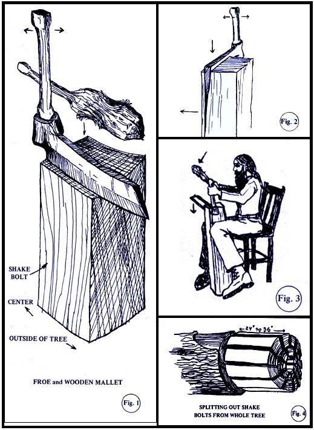

Ever admire an old house covered with weathered shakes...those long shingles old-timers used to split from logs? Well, if you're reasonably good with tools, you can make the same kind of roofing for your own buildings.
Turning out handmade shakes isn't difficult in itself...the hard part is finding the right material. As Fig. 1 shows, shakes are cut from blocks of wood (shake bolts) split out of a whole trunk of cedar, sugar pine, redwood, fir or other straight-grained timber. Not all trees that look straight from the outside prove to be so when they're opened up, however, and you may have to test two- to three-foot chunks sawed off a number of trees before you find a trunk that splits out well. Obviously, you should limit this potentially wasteful search to timber that is already down or dead.
When my wife and I need shake material, we go around to areas that have just been logged and ask the crews if we can clean up a little of the mess they've left. Usually the answer is "yes." Alternatively, a permit to cut wood in a national forest will buy you all the bolts you need for $3.00-$4.00.
The tools needed to get shake bolts out of a whole tree are a chain saw (or a two-man crosscut saw), two or three wedges, a small sledgehammer and an axe. After you've cut off a 24"-36" drum of timber, you stand it on end, tap a straight line across the diameter with wedge and hammer and split the chunk in half. Then split off a narrow triangular section from one of the halves and remove the heartwood so that the remaining piece-measured at right angles to the rings-matches the width you want your shingles to be (see Fig. 4).
Finally, try slicing the sample hunk into shakes. If the wood is unsuitable, you'll have to go on to another log...but if you're lucky, the test bolt will split into smooth shingles 1/4"-5/8" thick. In that case, go ahead and divide the section into shakes as shown in Fig. 4. [The Foxfire Book has an excellent sequence of photographs showing this operation. -MOTHER.] The tree you found should give you enough material to cover a good-sized roof. (To be more exact, 20 feet of good straight timber will yield about 20 "squares" of shakes...a square being enough to cover an area of 100 square feet when the slabs are properly laid.)
Fig. 1 shows the tools you'll need to split the shakes from the bolts: a froe (metal wedge 8"-12" long, with an "eye" in one end to hold a handle) and a wooden mallet (made of hardwood, with a knot for strength). Froes can sometimes be found in secondhand stores...I wouldn't pay more than about $8.00. Or ask almost any older farmer. Very likely he has one of these outmoded tools lying around and will lend or give it to you.
In a pinch, a froe can be made from a section of a leaf-type automobile spring. Cut the metal, heat it and curl one end in a circle 1"-1- 1 /2" in diameter to take the handle. Sharpen the edge and you have a shake-making tool.
To start the froe into the bolt, pound the back of the blade several times with the mallet. The thickness of your shake is determined at this point. If you find that the shingles are splitting a little too thin-less than 1/4"-make your next start a bit further from the edge.
When the back of the froe has been driven in level with the end of the bolt, the handle of the tool is either pulled toward you or pushed away (whichever you find works best). This twisting of the blade opens the split wider and the froe is then pushed down about three to six inches. Twist again in the same way, and the shake should pop off the bolt.(See Figs. 2 and 3.)
The technique is really much simpler than it sounds in print. After no more than an hour of practice you'll feel that you're getting the hang of it, and if you keep at the job about two hours a day for three or four days you'll realize that the shakes are stacking up with very little effort. You can usually split one to two squares in two hours, and a roof 30' X 40' takes about twelve squares. This means, at most, two hours of work a day for six to ten days.
Applying the shakes to the roof isn't hard either. Most basic carpentry books will tell you how to lay wooden shingles, and the method is the same for the homemade kind.
I've found it rewarding to cover our goat barn and our home with the product of froe, mallet and my own hands. Once you've mastered this old-time skill, I'm sure you'll find it just as satisfying as I do.
|
 |
|
|